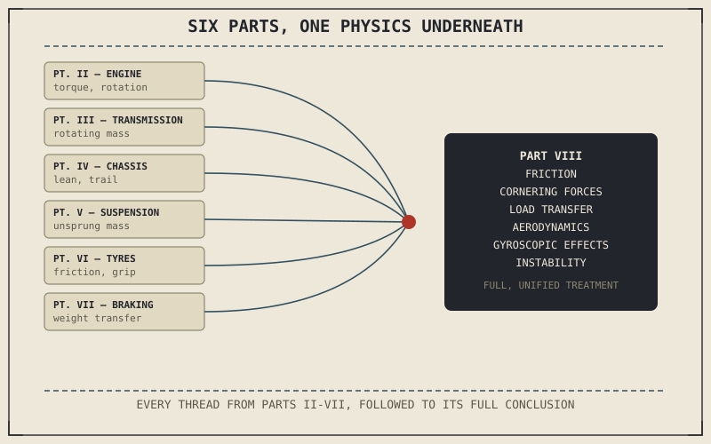

Friction, load transfer, gyroscopic effects, and centripetal force have all appeared in this book already — quietly doing work in the background of chapters about tyres, chassis geometry, and braking, named just enough to explain the specific system at hand, then set aside before their full implications were explored. This part goes back and gives each of those ideas its complete, unified treatment, and shows how they interlock to explain things no single earlier chapter could fully account for on its own.
Seven Parts of Hardware, One Set of Physics Underneath
Every part of this book so far has organized itself around a physical system: the engine in Part II, the transmission in Part III, the chassis in Part IV, suspension in Part V, tyres and wheels in Part VI, and braking in Part VII. That organization was the right way to introduce a motorcycle piece by piece, but it necessarily split up ideas that actually belong together, and it introduced some of them before the rest of the picture existed to connect them to. Friction showed up governing tyre grip in Chapter 6.4 and again governing brake pad contact in Chapter 7.2; load transfer showed up under braking in Chapter 7.5 but not yet under cornering. Countersteering and gyroscopic precession already received full chapters of their own, in Chapter 4.5 and Chapter 4.6, but at that point in the book neither chapter could connect to the centripetal force, friction circle, or load-transfer concepts this part is about to establish, because those concepts didn't exist yet. This part collects every one of these threads — some genuinely new, others already introduced but still waiting to be connected to what came after them — and follows each one to its actual physical conclusion.
Why This Belongs Here, Not Earlier
Placing this part after braking rather than before any of the hardware parts is deliberate. Understanding centripetal force, load transfer, or gyroscopic precession in the abstract, disconnected from any actual motorcycle system, would have been considerably harder to make concrete — this part can now explain cornering forces by pointing directly at the tyre's contact patch from Part VI, or explain gyroscopic stability by pointing directly at the wheel that Part VI and Part VII both already described in physical detail. Every concept in this part has a real, already-familiar piece of hardware to attach itself to.
This part isn't introducing new hardware — it's going back through six parts of engine, transmission, chassis, suspension, tyres, and brakes, and pulling out the physics that was always running underneath every one of them, now given room to be explained completely rather than in passing.

A diagram showing six earlier parts of the book — engine, transmission, chassis, suspension, tyres, brakes — each with a physics concept it touched on briefly, with lines converging into this part's full unified treatment of friction, cornering forces, load transfer, aerodynamics, and gyroscopic effects.
A Common Misconception, Cleared Up Early
It's easy to assume a part titled "Motorcycle Physics" is more theoretical or less practical than the hardware-focused parts before it — equations for their own sake, disconnected from actually riding or maintaining a motorcycle. The opposite is closer to true. Chapter 8.4 quantifies exactly how much lean the countersteering input from Chapter 4.5 actually needs to produce, using the centripetal force math this part introduces; combined load transfer, covered in Chapter 8.6, explains exactly why trail braking into a corner feels the way it does; Chapter 8.9 and 8.10 connect the gyroscopic precession Chapter 4.6 already introduced to the wheel mass and grip concepts Parts VI and VII added afterward. This part is the physics behind lived, everyday riding experience, not physics instead of it.
Where This Leads
Friction is the most fundamental of these threads, and the one nearly every other chapter in this part builds on. Chapter 8.2 starts there, revisiting friction in full — including a distinction, between static and kinetic friction, that this book has used implicitly for seven parts without ever naming directly.
Key Concepts to Remember
- This part collects physics concepts — friction, load transfer, gyroscopic effects, cornering forces — that appeared briefly across Parts II through VII and gives each its full, unified treatment.
- This part is placed after the hardware parts deliberately, so every physics concept can attach to hardware the reader already understands concretely.
- This part's physics explains lived riding experience directly — countersteering, trail braking feel, and speed-dependent stability — not abstract theory separate from riding.
Cross-References
| ← Ch. 7.7 | Closed Part VII by promising the unifying physics behind everything the book has covered; this chapter opens Part VIII with that promise's framing. |
| ← Ch. 6.4 | Introduced friction and the friction circle in the context of tyre grip; this part's Chapter 8.2 returns to friction for its complete treatment. |
| → Ch. 8.2 | Revisits friction in full, including the static-versus-kinetic distinction this book has used implicitly since Part VI. |